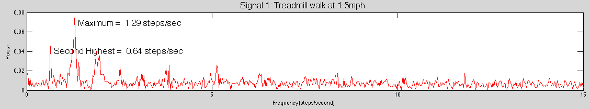

Human Activity Recognition
Table of Contents
Frequency Domain Features
Frequency domain features offer insights into the periodic patterns and rhythmic behaviors inherent within a signal. Activities that manifest a repetitive or cyclic nature are especially ripe for analysis using these features. Recall the pedometer case study, where a periodic pattern in the walking signal was evident. By utilizing sophisticated techniques, we can extrapolate this rhythmic data even more effectively.
Extracting Frequency Domain Features: The Role of FFT
The Fast Fourier Transform (FFT) is a pivotal algorithm that facilitates the transformation of signals from their time domain representation to their frequency domain counterpart. Essentially, while every real-world signal exists in the time domain—composed of myriad sinusoids with varying frequencies—the FFT allows us to perceive these signals through a different lens: the frequency domain. Certain characteristics and nuances of a signal, often not easily seen in the time domain, become pronounced and accessible in the frequency domain, making this important for activity classification.
While a comprehensive discussion on the frequency domain features is beyond our current scope, understanding the core features and their practical applications is essential. We look at two frequency domain features in this section.
- Dominant Frequency
- Signal Energy
Let’s explore these frequency domain features in detail:
Dominant Frequency
- Definition: Represents the most significant rhythmic component or periodic pattern within the data.
- Utility: Provides insights into the primary repetitive behavior of an activity.
- Examples: In a walking trace, the dominant frequency would typically represent the periodic footfalls. If an individual takes a step roughly every half a second, this frequency would mirror the repetitive stepping pattern.
Signal Energy
- Definition: Measures the magnitude or intensity of variations within the accelerometer data. The more pronounced its periodic components, the higher the signal energy.
- Utility: Gives an overall perspective on the robustness and amplitude of periodic elements within a signal.
- Examples: Activities with clear repetitive patterns, such as cycling, would display higher signal energy due to the consistent pedal strokes.
Applications and Insights
Visualizing a scenario of walking on a treadmill, as depicted in the subsequent figure, reveals a few dominant frequencies. Some could be harmonics of the main walking frequency. However, zeroing in on the primary dominant frequencies illuminates the core periodicity of the walking rhythm.
The figure below shows an example for walking on a treadmill. You can see that there seem to be a few dominant frequencies, and some of them are harmonics of the frequency of the walking. But the dominant frequencies give you sufficient information about the periodicity of walking.

Figure 1: Energy in different frequency bands for accelerometer data collected during walking
Extending our focus beyond accelerometer data, gyroscope data can also offer valuable frequency domain insights. For example, consider the context of detecting various actions in cycling such as:
-
Pedal Rotations: The dominant frequency extracted from gyroscopic data during cycling would correlate to the consistent rotations of the pedals. As a rider pedals in rhythmic cycles, the gyroscope captures this behavior, making the dominant frequency a pivotal feature for analysis.
-
Change in Cycling Speeds: Variations in cycling speed, like transitioning from a slow pedal to a rapid sprint, will exhibit different rhythmic patterns in the data. Understanding the dominant frequency in these cases helps ascertain the main cycling rhythm.
Thus, frequency domain features, although somewhat more complicated than their time-domain counterparts, are instrumental in discerning activities based on their rhythmic and cyclic behavior.